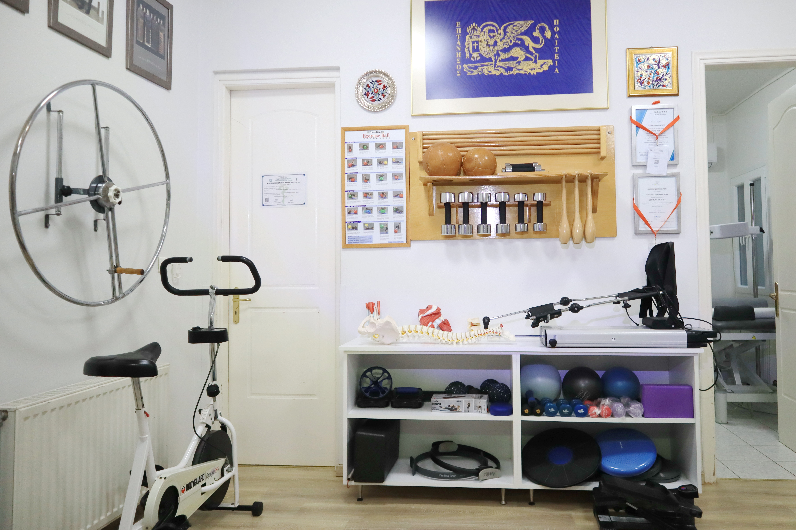
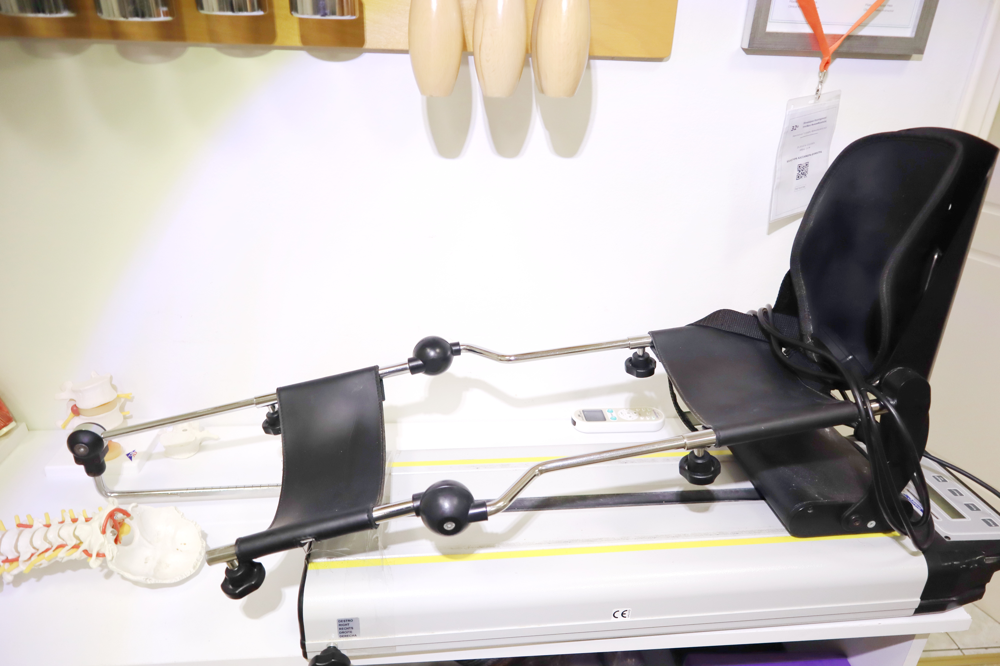
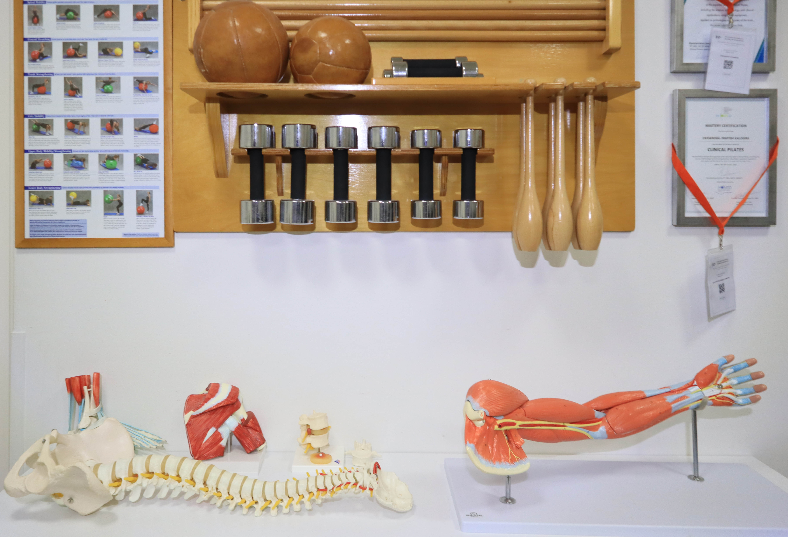
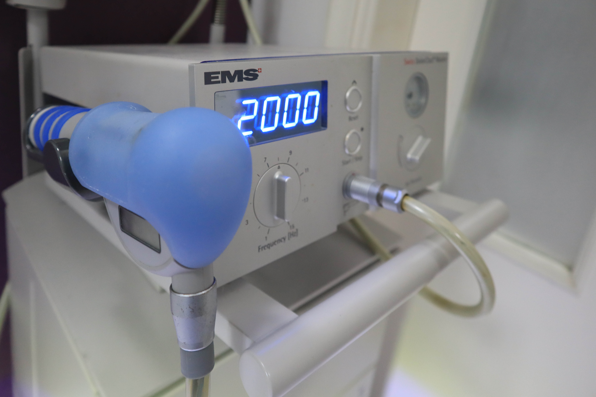
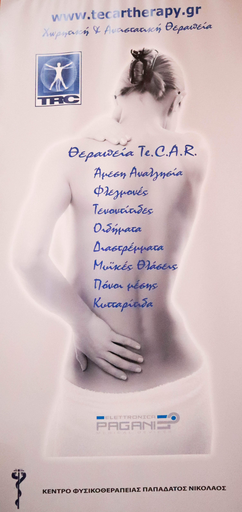

Εξατομικευμένα πλάνα για οξύ πόνο, χρόνιες καταστάσεις και λειτουργικές δυσλειτουργίες.
Φυσικοθεραπεία & Clinical Pilates
Αποκατάσταση της κίνησης με ηρεμία, φροντίδα και εμπειρία.
Το IASIS στο Αργοστόλι Κεφαλονιάς προσφέρει σύγχρονη φυσικοθεραπεία, manual therapy και Clinical Pilates, με προσωπική προσέγγιση για κατοίκους και επισκέπτες του νησιού.

Από το 1992
Μακροχρόνια κλινική εμπειρία
1:1 φροντίδα
Προσωπική προσοχή σε κάθε συνεδρία
Mat & Reformer
Clinical Pilates για έλεγχο και σταθερότητα
Καλώς ήρθατε στο IASIS
Ένας premium χώρος φυσικοθεραπείας σχεδιασμένος γύρω από την αποκατάσταση.
Η κλινική συνδυάζει σύγχρονο φυσικοθεραπευτικό εξοπλισμό, δια χειρός θεραπεία και εξατομικευμένη θεραπευτική άσκηση, ώστε κάθε ασθενής να ακολουθεί μια καθαρή πορεία από την ανακούφιση έως τη λειτουργική επάνοδο.
Στοχευμένη αποκατάσταση με έμφαση στην επούλωση, τη φόρτιση και την ασφαλή επιστροφή στη δραστηριότητα.
Συστηματική φροντίδα για λειτουργικότητα, ισορροπία, αυτοπεποίθηση και καθημερινή ανεξαρτησία.
Κύριοι τομείς εξειδίκευσης
Αυτά που υπηρετούμε καθημερινά στο IASIS
Στο IASIS συνδυάζονται manual therapy, ανάλυση κίνησης, θεραπευτική άσκηση και Clinical Pilates, τόσο για αποκατάσταση όσο και για μακροπρόθεσμη πρόληψη.
Δια χειρός θεραπεία για βελτίωση της κινητικότητας, μείωση του πόνου και επαναφορά πιο άνετων προτύπων κίνησης.
Συνεδρίες Mat και Reformer που ενισχύουν τον έλεγχο, τη σταθερότητα, τη στάση και την πρόληψη τραυματισμών.
Ήπια και προοδευτική αντιμετώπιση προσαρμοσμένη στις ανάγκες χρόνιων μυοσκελετικών καταστάσεων.
Στοχευμένη φροντίδα για τραυματισμούς υπέρχρησης, επαναφορά μετά από διακοπή προπόνησης και ασφαλή επιστροφή.
Κλινική σκέψη που λαμβάνει υπόψη το ιστορικό, τα συμπτώματα και τους λειτουργικούς στόχους του θεραπευόμενου.
Σύγχρονα φυσικοθεραπευτικά εργαλεία και μέθοδοι, ενταγμένα μόνο όταν πραγματικά εξυπηρετούν το πλάνο θεραπείας.
Clinical Pilates
Δύναμη, έλεγχος και ασφαλέστερη κίνηση στην καθημερινότητα.
Το Clinical Pilates στο IASIS εντάσσεται στην αποκατάσταση αλλά και στην πρόληψη. Κάθε συνεδρία προσαρμόζεται στον άνθρωπο που έχουμε μπροστά μας, με έμφαση στην αναπνοή, τη σωστή ευθυγράμμιση, τη σταθεροποίηση και την ποιότητα της κίνησης.
- Ιδανικό για επαναλαμβανόμενα επεισόδια πόνου και φάσεις αποκατάστασης
- Υποστηρίζει τη στάση, τη σταθερότητα του κορμού και την επίγνωση του σώματος
- Κατάλληλο τόσο για αρχάριους όσο και για άτομα με εμπειρία στην άσκηση

Γιατί επιλέγουν το IASIS
Σκέψη, φροντίδα, σαφής επικοινωνία και ήρεμο περιβάλλον.
Κάθε θεραπευτικό πλάνο προσαρμόζεται στις ανάγκες, τον ρυθμό και τους στόχους του κάθε ανθρώπου.
Καθαρό, φιλόξενο περιβάλλον με προσεκτικά επιλεγμένο εξοπλισμό και άνετους χώρους θεραπείας.
Η θεραπεία στοχεύει στη βελτίωση της καθημερινής κίνησης και όχι μόνο στη στιγμιαία μείωση των συμπτωμάτων.
Η παρουσίαση της κλινικής και η ιστοσελίδα εξυπηρετούν τόσο ελληνόφωνους όσο και διεθνείς επισκέπτες.
Μέσα στον χώρο
Αληθινοί χώροι, αυθεντική φροντίδα και προσεγμένη θεραπευτική ατμόσφαιρα.



Σχόλια
Ζεστή εμπειρία, καθαρή καθοδήγηση και ουσιαστική βελτίωση.
“Από την πρώτη στιγμή ο χώρος αποπνέει ηρεμία και το πλάνο θεραπείας εξηγείται πάντα με σαφήνεια.”Κάτοικος Κεφαλονιάς
“Το Clinical Pilates με βοήθησε να ξαναβρώ εμπιστοσύνη στην κίνησή μου μετά από επαναλαμβανόμενο πόνο στη μέση.”Ασθενής Clinical Pilates
“Ως επισκέπτης του νησιού εκτίμησα την καθαρή επικοινωνία στα Αγγλικά και την προσωπική φροντίδα.”Επισκέπτης από το εξωτερικό